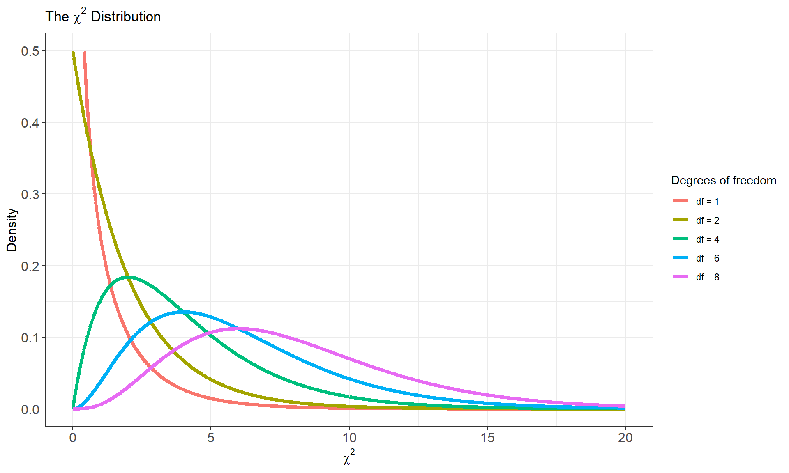

Last week we learned how to compare two populations across a qualitative response variable by comparing their relative proportions. Now we will learn how we can compare two groups on a quantitative response variable by comparing their means. There are many cases where researchers might be interesting comparing groups across a quantitative variable. For example, a teacher may be interested in comparing the average test scores of students in two different classes (Class A and Class B). A social scientist may be interest in whether there is a difference in salaries between men and women within a company. In any case, we are again dealing with two samples of sizes \(n_1\) and \(n_2\) which come from populations population 1 and population 2 and with means as \(\mu_1\) and \(\mu_2\).
| Population | Population Mean | Population Stdev | Sample Size | Sample Mean | Sample Stdev |
|---|---|---|---|---|---|
| 1 | \(\mu_1\) | \(\sigma_1\) | \(n_1\) | \(\bar{x}_1\) | \(s_1\) |
| 2 | \(\mu_2\) | \(\sigma_2\) | \(n_2\) | \(\bar{x}_2\) | \(s_2\) |
Let \(\mu_d = \mu_1 - \mu_2\) be the mean difference between the two populations. We can construct confidence intervals to estimate the average difference as well as conduct hypothesis tests to determine if two populations are significantly different.
We will begin by assuming that we are dealing with two independent samples from two distinct populations. The natural estimator of \(\mu_d\) is the difference between the sample means
\[\hat{\mu}_d = \bar{x}_1 - \bar{x}_2\]
To base our inference on the above estimator, we must know its sampling distribution. If we assume that both samples come from populations that are normally distributed, then the distribution of the difference will also be normally distributed and the variances will add:
\[Var[\mu_1 - \mu_2] = \frac{\sigma_1^2}{n_1}+\frac{\sigma_2^2}{n_2}\]
In practice, \(\sigma_1^2\) and \(\sigma_2^2\) are unknown population parameters but can be estimated by substituting in the sample variances \(s_1^2\) and \(s_2^2\). This gives the following standard deviation for the estimator \(\hat{\mu}_d\)
\[SE(\hat{\mu}_d) = \sqrt{\frac{s_1^2}{n_1}+\frac{s_2^2}{n_2}} \]
Just as it was for a single mean, estimating the population variances with the sample variances adds additional uncertainty. Thus, the the sampling distribution for the difference in two means is \(t\)-distributed, although the degrees of freedom are calculated differently. The actual formula for the degrees of freedom is quite messy and difficult to compute:
\[df = \frac{\left(\frac{s_1^2}{n_1}+\frac{s_2^2}{n_2}\right)^2}{ \frac{1}{n_1 - 1}\left(\frac{s_1^2}{n_1}\right)^2 + \frac{1}{n_2-1}\left(\frac{s_2^2}{n_2}\right)^2} \]
We will instead compute the degrees of freedom by taking the smaller of \(n_1-1\) and \(n_2 - 1\) which is a lower bound on the formula above
\[\hat{\mu}_d \sim t(\min(n_1 - 1, n_2 - 1)) \]
The margin of error for estimating the mean difference at the \((1-\alpha)\%\) level is given by
\[m = t_{1-\alpha/2} \times SE(\hat{\mu}_d) \]
which gives the following confidence interval for the mean difference
\[(\bar{x}_1 - \bar{x}_2) \pm t_{1-\alpha/2} \times SE(\hat{\mu}_d)\]
Example: Comparing Customer Satisfaction Levels - Suppose we want to compare the customer satisfaction levels of two competing cable television companies, Company 1 and Company 2. We randomly select customers from each company and ask them to rate their cable companies on a five-point scale (with 1 being least satisfied and 5 most satisfied). The data are summarized in the table below:
| Group | Number of customers | Sample Mean Rating | Sample Stdev |
|---|---|---|---|
| Company 1 | 174 | 4.2 | 0.8 |
| Company 2 | 355 | 3.8 | 1.1 |
Estimate the difference in mean satisfaction levels between the two companies at the \(95\%\) confidence level.
Let \(\mu_1\) represent the mean satisfaction score for company 1 and \(\mu_2\) represent the mean satisfaction score for company 2. The estimated mean difference in customer satisfaction is \[\hat{\mu_d} = 4.2 - 3.8 = 0.4 \]
Since the confidence level is \(95\%\) the standard score will be approximately the \(t_{1-0.05/2} = t_{0.975}\) or the \(97.5th\) percentile of a \(t\)-distribution with \(173\) degrees of freedom. Since the \(t\) and \(z\) distributions are approximately for sample sizes \(\geq 30\) we will use the standard score \(1.96\). The standard error of the difference is given by
\[SE(\hat{\mu}_d) = \sqrt{\frac{0.8^2}{174}+\frac{1.1^2}{355}} =0.0842 \]
Which yields the follow margin of error
\[ m = 1.96 (0.0842) = 0.165\]
The \(95\%\) confidence interval is \([0.24, 0.56]\). Thus, at the \(95\%\) confidence level we estimate the mean difference in customer satisfaction score to be no less than \(0.24\) and no more than \(0.56\). Notice that the above confidence interval does not span zero and thus likely constitutes a real, but small, difference between the companies
We can also test for a difference between two groups on a quantitative response. variable by comparing their means. The set up for a significance test for a difference in two means is more or less the same as we saw previously for two proportions, however, the calculations now involve \(\bar{x}_1\), \(\bar{x}_2\), \(s_1\) and \(s_2\). Recall that, under the assumption of normality for both populations and when using the sample standard deviations to estimate \(\sigma_1\) and \(\sigma_2\) the difference in means is \(t\)-distributed. We will see that test statistic \(t_{obs}\) is the standardized difference and has approximately the same distribution. Here’s how we set up a two-sample hypothesis test for means:
1. Assumptions
Data constitute a simple random sample
The two groups are independent
Both populations are normally distributed
2. Null and Alternative Hypotheses
\[H_0: \mu_1 = \mu_2 \ \ \ \text{which is the same as} \ \ \ H_0: \mu_1 - \mu_2 = 0\]
| Alternative Hypothesis | Critical Value | Rejection Region |
|---|---|---|
| \(H_A: \mu_1 - \mu_2 \neq 0\) | \(t_{1-\alpha/2}\) | \(|t| \geq t_{1-\alpha/2}\) |
| \(H_A: \mu_1 - \mu_2 < 0\) | \(t_\alpha\) | \(t\leq t_{\alpha}\) |
| \(H_A: \mu_1 - \mu_2 > 0\) | \(t_{1-\alpha}\) | \(t\geq t_{1-\alpha}\) |
3. Test statistic
\[t_{obs} = \frac{(\bar{x}_1 - \bar{x}_2) - (\mu_1 - \mu_2)}{\sqrt{\frac{s_1^2}{n_1}+\frac{s_2^2}{n_2}}} \]
The above test statistic is only approximately \(t\)-distributed. However, the lower bound for the degrees of freedom given by \(\min(n_1 - 1, n_2 - 1)\) generally leads to conservative estimates and tests and is thus favorable.
4. \(p\)-value
| Alternative Hypothesis | \(p\)-value |
|---|---|
| \(H_A: \mu_1 - \mu_2 \neq 0\) | \(P(|t| \geq |t_{obs}||H_0)\) |
| \(H_A: \mu_1 - \mu_2 < 0\) | \(P(t \leq t_{obs}|H_0)\) |
| \(H_A: \mu_1 - \mu_2 > 0\) | \(P(t\geq t_{obs}|H_0)\) |
5. Decision rule
\[\text{Reject} \ \ H_0 \ \ \text{if} \ \ \text{$p$-value} < \alpha \]
There is one situation where the above test statistic has exactly a \(t\)-distribution and that occurs when we can assume that both populations have the same standard deviation. In this case, we need only substitute a single sample standard deviation for \(\sigma_1\) and \(\sigma_2\). We call this the pooled estimate of the standard deviation:
\[ s_{pooled} = \sqrt{ \frac{(n_1 - 1)s_1^2 + (n_2 -1)s_2^2}{n_1+n_2 - 2}}\]
\(s_{pooled}\) is called the pooled estimator of \(\sigma_d\) because it combines the information from both samples.
The test statistic under the assumption of equal variances becomes
\[t_{obs} = \frac{(\bar{x}_1 - \bar{x}_2) - (\mu_1 - \mu_2)}{s_{pooled}\sqrt{\frac{1}{n_1}+\frac{1}{n_2}}} \]
which is exactly distributed as a \(t\) distribution with \(n_1+n_2 - 2\) degrees of freedom. The test based on the pooled estimate of the standard deviation is more powerful because the sampling distribution is exact and not an approximation as it is in the unpooled case.
Which test should you use?
Example: NCAA Womens Basketball - Sunday April 7th South Carolina and Iowa contended for the NCAA womens basketball championship. Consider the following table which gives the opponent and number of points scored for both teams in their last \(15\) games leading up to the championship.
| South Carolina | Matchup |
|
Iowa | Matchup |
|---|---|---|---|---|
| 78 | NC State | 71 | UConn | |
| 70 | Oregon State | 94 | LSU | |
| 79 | Indiana | 89 | Colorado | |
| 88 | UNC | 64 | West Virginia | |
| 91 | Presbyterian | 91 | Holy Cross | |
| 79 | LSU | 94 | Nebraska | |
| 74 | Tenessee | 95 | Michigan | |
| 79 | Texas A&M | 95 | Penn State | |
| 76 | Tenessee | 93 | Ohio State | |
| 98 | Arkansas | 108 | Minnesota | |
| 103 | Kentucky | 101 | Illinois | |
| 72 | Alabama | 69 | Indiana | |
| 70 | Georgia | 106 | Michigan | |
| 66 | Tenessee | 79 | Nebraska | |
| 83 | UConn | 111 | Penn State |
The summary of the last \(15\) games is given below:
| Population | Population Mean | Sample Size | Sample Mean | Sample Stdev |
|---|---|---|---|---|
| Iowa | \(\mu_1\) | \(n_1 = 15\) | 90.67 | 14.21 |
| South Carolina | \(\mu_2\) | \(n_2 = 15\) | 80.40 | 10.57 |
Conduct a unpooled two sample \(t\)-test at the \(\alpha = 0.05\) significance level to determine if there is a significant difference between the championship teams in the mean number of points scored per game.
\[H_0: \mu_1 = \mu_2 \]
The alternative hypothesis is that the two teams are different
\[H_A: \mu_1 \neq \mu_2\]
\[ t_{obs} = \frac{90.67 - 80.40}{\sqrt{\frac{14.21^2}{15}+\frac{10.57^2}{15}}} \approx 2.246\]
which is approximately distributed as
\[ t_{obs}\sim t(df = 14) \]
\[\text{$p$-value} = 2\left[P(|t| \geq |t_{obs}||H_0)\right] = 2(0.0207) = 0.0414 \]
We know that comparative methods (i.e methods that compare two groups/samples across a quantitative variable) are more common and often preferred over one sample procedures. One common comparative design that makes use of single-sample procedures for a population mean is called the paired \(t\)-test. This test is used to draw inferences about a population mean in matched pairs designs and can be thought of as the parametric analogue of the sign test we learned previously. Recall that in matched pairs studies subjects are matched in pairs and the quantitative outcome is compared within each pair.
matched pair designs are most common when randomization is not possible
used when observations are taken on the same subject (before and after treatment)
In a paired \(t\)-test we convert a comparative study into a one-sample procedure by making the response variable the difference between the two observations in each pair \(d_i = x_i - y_i\). The parameter under study is the population mean difference \(\mu_d\) which can be estimated by the sample mean difference \(\bar{x}_d = \bar{x} - \bar{y}\) computed over all pairwise differences. The standard deviation of the difference \(\sigma_d\) is then estimated with the sample standard deviation difference. Inference is then treated in the same way as the confidence interval and significance test procedures for a single sample
\[ \bar{x}_d \pm t_{1-\alpha/2} \frac{s_d}{\sqrt{n}}\]
\[t_{obs} = \frac{\bar{x}_d - \mu_d}{s_d/\sqrt{n}} \sim t(n - 1) \]
Example: Revisting the Spousal Dominance Problem - Recall the study comparing the ratings of husbands and wives on the perceived relative influence of each member of the couple on a major financial decision.
| Couple | Husband | Wife | Difference |
|---|---|---|---|
| 1 | 5 | 3 | 2 |
| 2 | 4 | 3 | 1 |
| 3 | 6 | 4 | 2 |
| 4 | 6 | 5 | 1 |
| 5 | 3 | 3 | 0 |
| 6 | 2 | 3 | -1 |
| 7 | 5 | 2 | 3 |
| 8 | 3 | 3 | 0 |
| 9 | 1 | 2 | -1 |
| 10 | 4 | 3 | 1 |
| 11 | 5 | 2 | 3 |
| 12 | 4 | 2 | 2 |
| 13 | 4 | 5 | -1 |
| 14 | 7 | 2 | 5 |
| 15 | 5 | 5 | 0 |
| 16 | 5 | 3 | 2 |
| 17 | 5 | 1 | 4 |
A summary of the difference in rating between husbands and wives is given below:
| Parameter | Estimate | Stdev |
|---|---|---|
| \(\mu_d\) | 1.35 | 1.77 |
Conduct a paired \(t\)-test at the \(\alpha = 0.05\) significance level to determine if husbands and wives differ in their percieved influence on financial decision making
The table below summarizes the procedures we have learned so far in the course
| Parameter | Type | Response Variable | \((1 - \alpha)\%\) CI | Test statistic | Distribution |
|---|---|---|---|---|---|
| \(p\) | one-sample | Categorical | \(\hat{p}\pm Z_{1-\alpha/2}\sqrt{\frac{\hat{p}(1-\hat{p})}{n}}\) | \(\frac{\hat{p} - p_0}{\sqrt{\frac{\hat{p}(1-\hat{p})}{n}}}\) | \(z\) |
| \(p_1 - p_2\) | two-sample | Categorical | \((\hat{p}_1 - \hat{p}_2)\pm Z_{1-\alpha/2} \sqrt{\frac{\hat{p}_1(1-\hat{p}_1)}{n_1}+\frac{\hat{p}_2(1-\hat{p}_2)}{n_2}}\) | \(\frac{\hat{p}_1 - \hat{p}_2}{ \sqrt{\hat{p}(1-\hat{p})\left(\frac{1}{n_1}+\frac{1}{n_2}\right)}}\) | \(z\) |
| \(\mu\) | one-sample | Quantatitive | \(\bar{x} \pm t_{1-\alpha/2, n-1}\frac{s}{\sqrt{n}}\) | \(\frac{\bar{x} - \mu_0}{s/\sqrt{n}}\) | \(t(n-1)\) |
| \(\mu_1 - \mu_2\) | two-sample | Quantitative | \((\bar{x}_1 - \bar{x}_2) \pm t_{1-\alpha/2, \min(n_1 -1, n_2-1)} \sqrt{\frac{s_1^2}{n_1}+\frac{s_2^2}{n_2}}\) | \(\frac{\bar{x}_1 - \bar{x}_2}{\sqrt{\frac{s_1^2}{n_1}+\frac{s_2^2}{n_2}}}\) | \(t(\min(n_1 - 1, n_2 - 1))\) |
| \(\mu_1 - \mu_2\) | pooled two-sample | Quantitative | \((\bar{x}_1 - \bar{x}_2) \pm t_{1-\alpha/2, \min(n_1 -1, n_2-1)} s_{pooled}\sqrt{\frac{1}{n_1}+\frac{1}{n_2}}\) | \(\frac{\bar{x}_1 - \bar{x}_2}{s_{pooled}\sqrt{\frac{1}{n_1}+\frac{1}{n_2}}}\) | \(t(n_1+n_2 - 2)\) |
| \(\mu_d\) | matched pairs | Quantitative | \(\bar{x}_d \pm t_{1-\alpha/2, n-1}\frac{s_d}{\sqrt{n}}\) | \(\frac{\bar{x}_d - \mu_d}{s_d/\sqrt{n}}\) | \(t(n-1)\) |
Despite significantly expanding the our statistical tools for inference we are still quite limited in our ability to analyze qualitative responses. Our tests for a proportion are useful for comparing a single category of a qualitative variable across one or two samples, but what if we are interested in comparing multiple categories across more than population? We will now explore some of the common tools for analyzing qualitative data. The inference techniques for qualitative variables are generally concerned with comparing a response variable with two or more categories across an explanatory variable with two or more groupings by exploring how the conditional distribution of the response varies across the groups in the explanatory variable. In other words, these inference procedures are designed to analyze the statistical association between two multi-category qualitative variables.
Such problems are typically represented as a table where the rows represent the groupings of the explanatory variable and columns represent the categories of the response variable - often referred to as “two-way tables”.
Example: Gregor Mendels Peas - Gregor Mendel conducted a study in which he crossed pea plants. The plants he crossed had the alleles (i.e., a form or version of a gene) for both yellow \(Y\) and green peas \(y\) — a trait controlled by a single locus. He believed two of his laws applied here: the Law of Segregation and the Law of Dominance. These laws would determine the probabilities of certain genotypes. This can be summarized by a Punnett square
| Yellow | Green |
|---|---|
| \(YY = 0.25\) | \(Yy = 0.25\) |
| \(Yy = 0.25\) | \(yy = 0.25\) |
Mendel bred \(8023\) offspring. Of these, \(6022\) were yellow, and \(2001\) were green. Do his laws “fit” the data? That is, does the trait of color in pea plants exhibit what we would call Mendelian inheritance?
| Color | Expected Frequency | Observed Count | Observed Frequency |
|---|---|---|---|
| Yellow | 0.75 | 6022 | 0.7506 |
| Green | 0.25 | 2001 | 0.2494 |
The above problem amounts to comparing the observed frequencies of each color to the frequencies that we would expect under the Mendelian model of inheritance. In other words, we are comparing our “observed” distribution to a distribution we would expect. This type of comparison can be accomplished using a \(\chi^2\) “goodness of fit” test.
In this case the null hypothesis is that the offspring of the pea plants follows Mendelian inheritance or
\[H_0: p_{yellow} = 0.75; p_{green} = 0.25 \]
The alternative is that frequency of each color do not follow the frequencies defined in the null. To generalize for a categorical variable with \(k\) possible outcomes the null becomes \(H_0: p_i = c_i; \forall i\in[1:k]\) and \(H_A:\) at least one \(p_i \neq c_i\).
The above hypothesis test uses \(\chi^2\) test statistic defined as
\[X^2 = \sum_{i =1}^k \frac{(\text{observed count}_i - \text{expected count}_i)^2}{\text{expected count}_i} \]
\(k\) is the number of possible outcomes
the observed count is the number of observations we observed with outcome \(i\)
the expected count is the number of observations we expect to have outcome \(i\) which is calculated under the null hypothesis as \(np_i\)
We can think of this calculated as measuring the average distance from the observed model to the model we expect under the null.
\(X^2\) can take on values between \(0\) and positive \(\infty\). A value of zero means the observed model exactly follows the expected model. Values greater than zero indicate a deviation from the expected model. Large values of \(X^2\) indicate evidence against the null hypothesis
Referring back to Mendel’s pea plants we compute the expected number of yellow pea plants as \(8023\times 0.75 = 6017.25\) and the expected number of green pea plants to be \(8023\times 0.25 = 2005.75\). The test statistic is
\[X^2 = \frac{(6022 - 6017.25)^2}{6017.25} +\frac{(2001 - 2005.75)}{2005.75} \]
\[ = 0.0037 + 0.0112 \]
\[ \approx 0.015\]
To conver the above statistic into a \(p\)-value we need to know its sampling distribution. The statistic \(X^2\) is called a \(\chi^2\) test statistic because its sampling distribution follows a special type of probability distribution called the \(\chi^2\) distribution

like the \(t\) distributio the \(\chi^2\) distributions form a family of distributions controlled by a single parameter: the degrees of freedom. We will use \(\chi^2(df)\) to depict a specific member of this family. For the goodness of fit test the the test statistic \(X^2\) follows a \(\chi^2\) distribution with \(k-1\) degrees of freedom: As we did the \(t\) distribution we can look up probabilities from a \(chi^2\) table:
| Upper tail | 0.25 | 0.2 | 0.15 | 0.125 | 0.1 | 0.075 | 0.05 | 0.025 | 0.005 | 0.0025 | 5e-04 |
|---|---|---|---|---|---|---|---|---|---|---|---|
| \(DF\) | |||||||||||
| 1 | 1.323 | 1.642 | 2.072 | 2.354 | 2.706 | 3.17 | 3.841 | 5.024 | 7.879 | 9.141 | 12.116 |
| 2 | 2.773 | 3.219 | 3.794 | 4.159 | 4.605 | 5.181 | 5.991 | 7.378 | 10.597 | 11.983 | 15.202 |
| 3 | 4.108 | 4.642 | 5.317 | 5.739 | 6.251 | 6.905 | 7.815 | 9.348 | 12.838 | 14.32 | 17.73 |
| 4 | 5.385 | 5.989 | 6.745 | 7.214 | 7.779 | 8.496 | 9.488 | 11.143 | 14.86 | 16.424 | 19.997 |
| 5 | 6.626 | 7.289 | 8.115 | 8.625 | 9.236 | 10.008 | 11.07 | 12.833 | 16.75 | 18.386 | 22.105 |
| 6 | 7.841 | 8.558 | 9.446 | 9.992 | 10.645 | 11.466 | 12.592 | 14.449 | 18.548 | 20.249 | 24.103 |
| 7 | 9.037 | 9.803 | 10.748 | 11.326 | 12.017 | 12.883 | 14.067 | 16.013 | 20.278 | 22.04 | 26.018 |
| 8 | 10.219 | 11.03 | 12.027 | 12.636 | 13.362 | 14.27 | 15.507 | 17.535 | 21.955 | 23.774 | 27.868 |
| 9 | 11.389 | 12.242 | 13.288 | 13.926 | 14.684 | 15.631 | 16.919 | 19.023 | 23.589 | 25.462 | 29.666 |
| 10 | 12.549 | 13.442 | 14.534 | 15.198 | 15.987 | 16.971 | 18.307 | 20.483 | 25.188 | 27.112 | 31.42 |
| 11 | 13.701 | 14.631 | 15.767 | 16.457 | 17.275 | 18.294 | 19.675 | 21.92 | 26.757 | 28.729 | 33.137 |
| 12 | 14.845 | 15.812 | 16.989 | 17.703 | 18.549 | 19.602 | 21.026 | 23.337 | 28.3 | 30.318 | 34.821 |
| 13 | 15.984 | 16.985 | 18.202 | 18.939 | 19.812 | 20.897 | 22.362 | 24.736 | 29.819 | 31.883 | 36.478 |
| 14 | 17.117 | 18.151 | 19.406 | 20.166 | 21.064 | 22.18 | 23.685 | 26.119 | 31.319 | 33.426 | 38.109 |
| 15 | 18.245 | 19.311 | 20.603 | 21.384 | 22.307 | 23.452 | 24.996 | 27.488 | 32.801 | 34.95 | 39.719 |
| 16 | 19.369 | 20.465 | 21.793 | 22.595 | 23.542 | 24.716 | 26.296 | 28.845 | 34.267 | 36.456 | 41.308 |
| 17 | 20.489 | 21.615 | 22.977 | 23.799 | 24.769 | 25.97 | 27.587 | 30.191 | 35.718 | 37.946 | 42.879 |
| 18 | 21.605 | 22.76 | 24.155 | 24.997 | 25.989 | 27.218 | 28.869 | 31.526 | 37.156 | 39.422 | 44.434 |
| 19 | 22.718 | 23.9 | 25.329 | 26.189 | 27.204 | 28.458 | 30.144 | 32.852 | 38.582 | 40.885 | 45.973 |
| 20 | 23.828 | 25.038 | 26.498 | 27.376 | 28.412 | 29.692 | 31.41 | 34.17 | 39.997 | 42.336 | 47.498 |
| 21 | 24.935 | 26.171 | 27.662 | 28.559 | 29.615 | 30.92 | 32.671 | 35.479 | 41.401 | 43.775 | 49.011 |
| 22 | 26.039 | 27.301 | 28.822 | 29.737 | 30.813 | 32.142 | 33.924 | 36.781 | 42.796 | 45.204 | 50.511 |
| 23 | 27.141 | 28.429 | 29.979 | 30.911 | 32.007 | 33.36 | 35.172 | 38.076 | 44.181 | 46.623 | 52 |
| 24 | 28.241 | 29.553 | 31.132 | 32.081 | 33.196 | 34.572 | 36.415 | 39.364 | 45.559 | 48.034 | 53.479 |
| 25 | 29.339 | 30.675 | 32.282 | 33.247 | 34.382 | 35.78 | 37.652 | 40.646 | 46.928 | 49.435 | 54.947 |
| 26 | 30.435 | 31.795 | 33.429 | 34.41 | 35.563 | 36.984 | 38.885 | 41.923 | 48.29 | 50.829 | 56.407 |
| 27 | 31.528 | 32.912 | 34.574 | 35.57 | 36.741 | 38.184 | 40.113 | 43.195 | 49.645 | 52.215 | 57.858 |
| 28 | 32.62 | 34.027 | 35.715 | 36.727 | 37.916 | 39.38 | 41.337 | 44.461 | 50.993 | 53.594 | 59.3 |
| 29 | 33.711 | 35.139 | 36.854 | 37.881 | 39.087 | 40.573 | 42.557 | 45.722 | 52.336 | 54.967 | 60.735 |
| 30 | 34.8 | 36.25 | 37.99 | 39.033 | 40.256 | 41.762 | 43.773 | 46.979 | 53.672 | 56.332 | 62.162 |
| 40 | 45.616 | 47.269 | 49.244 | 50.424 | 51.805 | 53.501 | 55.758 | 59.342 | 66.766 | 69.699 | 76.095 |
| 50 | 56.334 | 58.164 | 60.346 | 61.647 | 63.167 | 65.03 | 67.505 | 71.42 | 79.49 | 82.664 | 89.561 |
| 100 | 109.141 | 111.667 | 114.659 | 116.433 | 118.498 | 121.017 | 124.342 | 129.561 | 140.169 | 144.293 | 153.167 |
| Z-score | 0.674 | 0.842 | 1.036 | 1.15 | 1.282 | 1.44 | 1.645 | 1.96 | 2.576 | 2.807 | 3.291 |
| Confidence Level: | \(50\%\) | \(60\%\) | \(70\%\) | \(75\%\) | \(80\%\) | \(85\%\) | \(90\%\) | \(95\%\) | \(99\%\) | \(99.5\%\) | \(99.9\%\) |